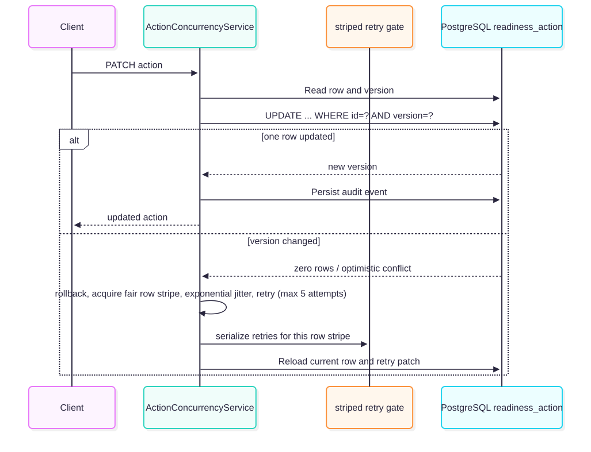

Fifty requests update the same readiness action at once. Without a concurrency control, 45 of the 50 changes disappear silently. After that is fixed, the app still serves under 40 requests a second, and the database is not the reason.
- Stack
- Java 25, Spring Boot 4.1.2, PostgreSQL 17.6
- Dataset
- One synthetic row per benchmark
- Tests
- 71 tests,
mvn verify, per FINDINGS - Environment
- i7-1165G7, 16 GB, Temurin 25.0.4.1
1. The lost update and two fixes
With @Version removed, 50 concurrent writers used the plain read-modify-write path; only 5 of 50 updates survived. The optimistic fix uses JPA @Version, five total attempts and exponential jitter with caps of 2, 4, 8 and 16 ms; exhausted API writes return HTTP 409. The comparison path uses SELECT … FOR UPDATE through PESSIMISTIC_WRITE.

| Variant | Outcome | Lost updates | Failed callers |
|---|---|---|---|
| No locking (red baseline, 1 run) | final update_count 5/50 | 45 | 0 (silent loss) |
Optimistic @Version, 5 attempts, exponential jitter (pure, gate off) | exhausted 107–125 of 250 calls per invocation (43–50%), 4 invocations | 0 | 107–125 per 250 (rejected loudly; 409 via the API) |
| Optimistic + opt-in single-JVM retry gate | 0 exhausted, 3 invocations | 0 | 0 |
Pessimistic PESSIMISTIC_WRITE (SELECT … FOR UPDATE) | 0 failures, 4 invocations | 0 | 0 |
No speed ratio is claimed: optimistic batches completed less work than pessimistic ones.
Readiness updates are expected to have low contention, so optimistic locking avoids holding a database lock while applying ordinary patches. If contention is sustained, optimistic retries increase latency and can exhaust the bound; pessimistic locking serializes writers and may increase waiting or deadlock exposure when transactions lock rows in different orders.
2. Where the CPU went (JFR)
- In the steady-state profile,
BCrypt.keyaccounted for 99.52% of 4,797 execution samples; machine CPU averaged 98.5%. - Maximum Hikari pending was 0, with no material blocking events; database connections were not the constraint.
- Every request re-verified the BCrypt password hash because HTTP Basic credentials were sent on every request and the security context was not kept between requests.
SecurityConfig now stores HTTP Basic authentication in an HttpSessionSecurityContextRepository, so later requests with the session cookie are not re-hashed. Each load-driver worker gets its own HttpClient and CookieManager. An integration test confirms that a Basic-authenticated request creates a session and a later PATCH with only that session returns 200.
| Platform threads (median of 3 runs) | Before | After |
|---|---|---|
| Throughput (req/s) | 38.6 | 399.4 |
| p50 (ms) | 1,280 | 110.6 |
| p95 (ms) | 1,545 | 264.8 |
| p99 (ms) | 2,132 | 398.3 |
| Errors / 409s | 0 / 0 | 0 / 0 |
| Max Hikari pending | 0 | 40 |
| App JVM user CPU, avg (profiling run) | 71.5% | 13.2% |
The bottleneck moved to the 10-connection pool (40 of 50 workers waiting).
Server-side sessions add state, timeout and fixation concerns (Spring Security's default session-fixation protection is kept; CSRF stays enabled for web routes and is ignored only for /api/**). For a multi-instance API, token authentication (OAuth2/JWT) avoids both per-request password hashing and server session state.
3. Do virtual threads help here?
Virtual threads gave no throughput gain at either concurrency, and both modes were bound by the 10-connection pool. The 200-worker gap did not reproduce, so no thread-type difference is claimed.
| Workers | Request threads | Throughput median (range), req/s | p50 median (range), ms | p95 median (range), ms | p99 median (range), ms | Errors / 409s | Max Hikari pending (range) |
|---|---|---|---|---|---|---|---|
| 50 | Platform | 383.4 (349.4–412.4) | 112.5 (105.7–120.7) | 293.4 (263.7–326.4) | 440.9 (440.1–519.0) | 0 / 0 | 40 (40–40) |
| 50 | Virtual | 357.0 (280.7–435.7) | 124.8 (107.3–145.3) | 298.3 (234.7–428.2) | 427.9 (309.1–626.0) | 0 / 0 | 40 (40–40) |
Consistency check (closed loop, Little's law): 50 / 383.4 req/s ≈ 130 ms, in line with the p50 of 112.5 ms.
4. What I'd do next
Reset the database between cells and interleave the modes for a clean thread-type comparison; size the pool to what PostgreSQL can serve before comparing thread models again. For a multi-instance API, use token authentication (OAuth2/JWT).
Synthetic data on a single workstation (app, PostgreSQL and load driver on the same machine); evidence is limited to this setup.